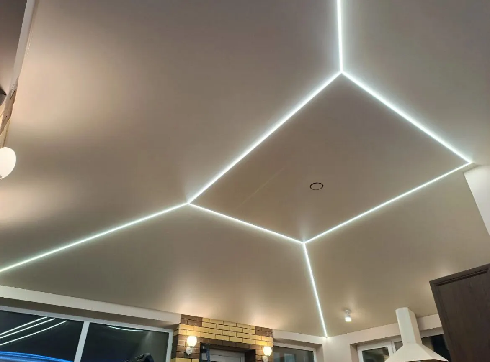

Натяжные потолки · Петрозаводск
Натяжные потолки в Петрозаводске: замер, монтаж, свет
Матовые потолки, световые линии, подсветка по контуру, установка светильников. Затопили соседи – звоните, поможем с провисшим потолком.
- Бесплатный замер
- Выезд после потопа
- Свет: линии, контуры, светильники

Услуги и цены
Цену называют по вашей комнате: уточняйте при вызове замерщика.
Потолки и свет
- Натяжной потолокматовый, с монтажомуточнить
- Световые линиив натяжном потолкеуточнить
- Подсветка по контурупарящий потолокуточнить
- Установка светильниковвстраиваемые, трековые, люстрыуточнить
- Скрытый карниздля шторуточнить
Срочно
- Потолок после потопаслив воды и работа с провисшим полотномуточнить
- Замервыезд мастера на объектуточнить
Все цены уточняются при вызове замерщика.
Как проходит работа
- 01
Оставьте заявку
В Telegram, WhatsApp или по телефону.
- 02
Замер на объекте
Мастер приезжает, подсказывает по освещению.
- 03
Монтаж
Инструменты привозят с собой, потолок устанавливают аккуратно.
Наши работы
Реальные потолки с карточки на Яндекс Картах. Нажмите на фото, чтобы увеличить.
Что есть в компании
Бесплатный замер
Клиенты пишут, что замеры бесплатные и мастера приезжают быстро.
Выезд после потопа
Помогают, когда потолок провис: сливают воду и объясняют, что делать дальше.
Потолок без запаха
Клиенты отмечают аккуратный монтаж и незаметный карниз.
Свет на любой вкус
Световые линии, контурная подсветка, трековые и встраиваемые светильники.
Отзывы с Яндекс.Карт
«Нас затопили соседи, из-за чего сильно провис натяжной потолок. Мастера компании «Про потолки» оперативно приехали спасать нас от потопа, подробно объяснили план действий и качественно выполнили работу. Приятные в общении. Все необходимые инструменты привезли с собой. Остались довольны результатом, рекомендуем.»
Юлия · 15 января
«Ребята сразу выехали в этот же день на замеры, обращу внимание, что у них эта услуга «БЕСПЛАТНАЯ», что редко встретишь. Помогли с выбором светосвещения. Свою работу выполнили в полном объеме.»
Анна Г. · 2 декабря 2024
«Быстро и качественно сделали идеальный натяжной потолок! Вежливые и доброжелательные работники. Потолок без запаха, карниз незаметный как мы хотели.»
Матвей Кузнецов · 25 августа
Отзывы с карточки на Яндекс.Картах, без правок.
Вызовите замерщика
- Адрес
- просп. Ленина, 24, Петрозаводск
- Часы
- ежедневно 10:00-18:00
- Телефон
- +7 (911) 407-00-05